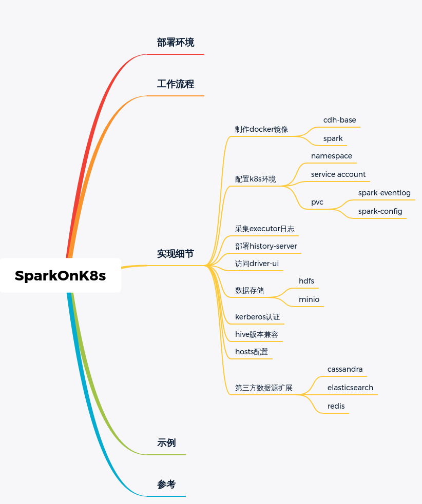

dolphinscheduler的调度任务有spark，默认仅支持spark on yarn,
本文记录了折腾spark on k8s的踩坑过程，主要难点是镜像的制作，kerberos认证和hive的兼容

部署环境
部署要求
- 实验版Spark 2.3+，正式版Spark 3.0+
- Kubernetes 1.6+
- 具有Kubernetes pods的list, create, edit和delete权限
- Kubernetes集群必须正确配置Kubernetes DNS
验证环境
cdh版本:hadoop2.6.0-cdh5.16.1
- hive：1.1.0
- hadoop：２.6.0
- spark：2.4.8/3.1.2
工作流程
当我们通过spark-submit将Spark作业提交到Kubernetes集群时，会执行以下流程：
- Spark在
Kubernetes pod中创建Sparkdriver; - Driver调用Kubernetes API创建
executorpods，executor pods执行作业代码; - 计算作业结束，
executorpods回收并清理; driverpod处于completed状态，保留日志，直到Kubernetes GC或者手动清理;
制作docker镜像
由于cdh的包封装了很多再用的组件，所以先制作一个cdh-base的镜像。
后续还有dolphinscheduler-worker,flink,spark的镜像都基于cdh-base制作。
cdh-base的镜像
坑：cdh的parcel包官方已不提供下载了,可以从网上找到一些别人下载分享的。
下载好后，上传到内部网盘,然后制作docker镜像并push到内部harbor仓库.
Dockerfile
clear.sh
spark镜像
下载spark3.1.2的官方压缩包，里面自带dockerfile，主要修改基于cdh包制作
entrypoint修改内容：
- 根据环境变量
SPARK_VERSION设置的spark版本设置SPARK_HOME - 加载Hosts
- 新增jars_ext到
SPARK_DIST_CLASSPATH - 外部可通过
PYSPARK_PYTHON设置pyspark的虚拟环境
配置K8S环境
需要运维新增namespace和service account和pvc
Spark的PVC配置
spark pvc
- spark-eventlog：spark执行事件日志
- spark-config：spark和hdfs/minio/hive等服务的配置文件，host文件路径
- spark-application：spark执行所需的资源,如jar,py,keytab等
mount glusterfs pvc
spark-configmount -t glusterfs -o backup-volfile-servers=glusterfs_ip k8s_ip:spark-config /var/lib/dolphinscheduler/worker-data/spark-config
spark-applicationmount -t glusterfs -o backup-volfile-servers=glusterfs_ip k8s_ip:spark-application /var/lib/dolphinscheduler/worker-data/exec/process
spark-submit提交客户端需要mount spark的pvc的资源，保持简单（客户端的路径和pod内的路径一致）
采集executor日志
Spark On Yarn，可以开启yarn.log-aggregation-enable将日志收集聚合到HDFS中，以供查看。Spark On Kubernetes，则缺少这种日志收集机制，我们只能通过Kubernetes pod的日志输出，来查看Spark的日志：
这个在k8s运维层解决即可，k8s通过fluent-bit会将pod日志都采集到es.
访问driver ui
- 官方提供的port-forward方案，
kubectl -n spark port-forward podName 4000:4040，这种比较原始，每个spark-submit都需要启动一个代理服务，适合测试，不适合生产环境 生产环境应类似部署独立的service和ingress提供外部访问,注意需要配置
spark.ui.proxyRedirectUri参数为ingress的path- spark-ui-svc.yaml
部署history-server
- spark程序开启eventlog，写入挂载的eventlog的pvc目录
- 部署
spark historyserver查看，挂载eventlog的pvc目录
spark数据存储
- s3a(minio):spark状态数据
- hdfs：业务数据
S3A
在$SPARK_HOME内新增目录jars_ext，将扩展jar放入spark-3.1.2-bin-hadoop2.7.tgz对应的aws版本(这个版本不能向下兼容,版本不能搞错)
1 | #/usr/lib/cdh/lib/spark3/jars_ext |
然后在entrypoint.sh中加入export SPARK_DIST_CLASSPATH="$SPARK_DIST_CLASSPATH:${SPARK_HOME}/jars_ext/*"
spark-submit参数
1 | --conf spark.hadoop.fs.s3a.impl=org.apache.hadoop.fs.s3a.S3AFileSystem \ |
HDFS
hive和hdfs集成涉及
- python-venv:用于设置PYSPARK_PYTHON
- 配置文件：hdfs-site.xml,core-site.xml（可包含s3a配置）,hive-site.xml,yarn-site.xml(mapreduce计算依赖此配置)
- 认证文件：keytab,krb5.conf
- 数据文件：application提交的jar和py,zip依赖
Spark 运行需要配置 Hadoop 的配置文件位置，如果 ClassPath 没有，则无法访问 HDFSexport HADOOP_CONF_DIR=/opt/spark/conf
hdfs测试脚本: hdfs dfs -copyFromLocal people.json hdfs://ha/user/hive/examples/src/main/resources/people.json
1 | ./bin/run-example \ |
1 | ${SPARK3_HOME}/bin/run-example --verbose \ |
local测试1
2
3
4
5
6
7
8
9
10
11
12
13
14
15${SPARK3_HOME}/bin/spark-submit --verbose \
--master local \
--conf spark.driver.extraJavaOptions="-Dlog4j.debug" \
--conf spark.executor.extraJavaOptions="-Dlog4j.debug" \
--conf spark.sql.hive.metastore.jars.path=file:///opt/cdh/lib/hive/lib/*.jar,file:///opt/cdh/lib/hadoop/client/*.jar \
--conf spark.sql.hive.metastore.jars=path \
--conf spark.sql.hive.metastore.version=1.1 \
--conf spark.kerberos.principal=x \
--conf spark.kerberos.keytab=/dboard/application/2/1963/22621/39887/x.keytab \
--conf spark.files.fetchTimeout=5m \
--conf spark.files.overwrite=true \
--conf spark.driver.memory=1048M \
--conf spark.executor.memory=1024M \
--conf spark.executor.instances=2 \
demo.py
k8s测试1
2
3
4
5
6
7
8
9
10
11
12
13
14
15
16
17
18
19
20
21
22
23
24
25
26
27
28
29
30
31
32
33
34
35
36
37
38
39
40
41
42
43
44
45
46
47
48
49
50
51
52
53
54
55
56
57export KUBECONFIG=/opt/dolphinscheduler/conf/config/kube_config.yaml
${SPARK3_HOME}/bin/spark-submit --verbose \
--conf spark.driver.extraJavaOptions="-Dlog4j.debug" \
--conf spark.executor.extraJavaOptions="-Dlog4j.debug" --master k8s://https://ip:6443 --deploy-mode cluster \
--conf spark.kubernetes.namespace=dboard \
--conf spark.kubernetes.container.image=harbor.dc.xxx-it.com/x-bigdata/spark:latest \
--conf spark.kubernetes.authenticate.driver.serviceAccountName=dboard \
--conf spark.kubernetes.driverEnv.SPARK_VERSION=3 \
--conf spark.executorEnv.SPARK_VERSION=3 \
--conf spark.sql.hive.metastore.jars.path=file:///opt/cdh/lib/hive/lib/*.jar,file:///opt/cdh/lib/hadoop/client/*.jar \
--conf spark.sql.hive.metastore.jars=path \
--conf spark.sql.hive.metastore.version=1.1 \
--conf spark.kubernetes.driver.volumes.persistentVolumeClaim.dboard-log.options.claimName=dboard-log \
--conf spark.kubernetes.driver.volumes.persistentVolumeClaim.dboard-log.mount.path=/dboard/log/spark-eventlog \
--conf spark.kubernetes.driver.volumes.persistentVolumeClaim.dboard-log.mount.readOnly=false \
--conf spark.kubernetes.driver.volumes.persistentVolumeClaim.dboard-log.mount.subPath=spark-eventlog \
--conf spark.kubernetes.executor.volumes.persistentVolumeClaim.dboard-log.options.claimName=dboard-log \
--conf spark.kubernetes.executor.volumes.persistentVolumeClaim.dboard-log.mount.path=/dboard/log/spark-eventlog \
--conf spark.kubernetes.executor.volumes.persistentVolumeClaim.dboard-log.mount.readOnly=false \
--conf spark.kubernetes.executor.volumes.persistentVolumeClaim.dboard-log.mount.subPath=spark-eventlog \
--conf spark.eventLog.dir=/dboard/log/spark-eventlog \
--conf spark.eventLog.enabled=true \
--conf spark.eventLog.compress=true \
--conf spark.kubernetes.driver.volumes.persistentVolumeClaim.dboard-config.options.claimName=dboard-config \
--conf spark.kubernetes.driver.volumes.persistentVolumeClaim.dboard-config.mount.path=/dboard/config \
--conf spark.kubernetes.driver.volumes.persistentVolumeClaim.dboard-config.mount.readOnly=true \
--conf spark.kubernetes.executor.volumes.persistentVolumeClaim.dboard-config.options.claimName=dboard-config \
--conf spark.kubernetes.executor.volumes.persistentVolumeClaim.dboard-config.mount.path=/dboard/config \
--conf spark.kubernetes.executor.volumes.persistentVolumeClaim.dboard-config.mount.readOnly=true \
--conf spark.kubernetes.driverEnv.HADOOP_CONF_DIR=/dboard/config/hadoop \
--conf spark.executorEnv.HADOOP_CONF_DIR=/dboard/config/hadoop \
--conf spark.kubernetes.driverEnv.PYSPARK_PYTHON=/dboard/config/python-venv/bin/python \
--conf spark.executorEnv.PYSPARK_PYTHON=/dboard/config/python-venv/bin/python \
--conf spark.kubernetes.driverEnv.HOSTS=/dboard/config/hosts \
--conf spark.executorEnv.HOSTS=/dboard/config/hosts \
--conf spark.kubernetes.driver.volumes.persistentVolumeClaim.dboard-application.options.claimName=dboard-application \
--conf spark.kubernetes.driver.volumes.persistentVolumeClaim.dboard-application.mount.path=/dboard/application \
--conf spark.kubernetes.driver.volumes.persistentVolumeClaim.dboard-application.mount.readOnly=false \
--conf spark.kubernetes.executor.volumes.persistentVolumeClaim.dboard-application.options.claimName=dboard-application \
--conf spark.kubernetes.executor.volumes.persistentVolumeClaim.dboard-application.mount.path=/dboard/application \
--conf spark.kubernetes.executor.volumes.persistentVolumeClaim.dboard-application.mount.readOnly=false \
--conf spark.kubernetes.kerberos.krb5.path=/etc/krb5.conf \
--conf spark.kerberos.principal=x \
--conf spark.kerberos.keytab=/dboard/application/2/1963/22621/39887/x.keytab \
--conf spark.kubernetes.file.upload.path=s3a:/dboard/__SPARK_APP__ \
--conf spark.hadoop.fs.s3a.endpoint=http://ip:32030 \
--conf spark.hadoop.fs.s3a.access.key=DYaDwXsj8VRtWYPSbr7A \
--conf spark.hadoop.fs.s3a.secret.key=z7HAEhdyseNX9AVyzDLAJzEjZChJsnAf1f7VehE \
--conf spark.hadoop.fs.s3a.impl=org.apache.hadoop.fs.s3a.S3AFileSystem \
--conf spark.files.fetchTimeout=5m \
--conf spark.files.overwrite=true \
--conf spark.driver.memory=2048M \
--conf spark.executor.memory=1024M \
--conf spark.executor.instances=2 \
--conf spark.kubernetes.executor.request.cores=2 \
--conf spark.kubernetes.driver.request.cores=1 \
--conf spark.kubernetes.driver.pod.name=spark-demo1 local:///dboard/application/2/1963/22621/39887/demo.py
kerberos认证
手动kinit
在spark２.4.8尝试
自行编译spark代码集成hadoop２.6,hive-1.1.0
1 | ./dev/make-distribution.sh \ |
1 | # entrypoint.sh do kerberos auth by environment variable |
kerberos认证问题
通过spark.executorEnv传入环境变量(krb5.conf、keytab、principal)到Node，完成kerberos认证。
Pod内测试pyspark是能够正常执行hdfs和hive的操作；
pyspark用master(‘local’)模式代码也工作正常；
但是spark-submit的python代码在k8s集群的executor上spark.read操作hdfs文件报kerberos认证异常。
2
3
4
5
6
7
8
9
10
11
12
13
14
15
16
17
18
19
20
21
22
23
24
25
26
27
28
29
30
31
32
33
34
35
36
37
38
39
40
41
42
43
44
45
46
47
48
49
50
51
52
53
54
55
56
57
58
59
60
61
62
63
64
65
66
67
68
69
70
71
72
73
74
java.io.IOException:
Failed on local exception:
java.io.IOException:
org.apache.hadoop.security.AccessControlException:
Client cannot authenticate via:[TOKEN, KERBEROS]; Host Details :
local host is: "pysparkapp-1631176344099-exec-2/ip";
destination host is: "ip":8020;
trueat org.apache.hadoop.net.NetUtils.wrapException(NetUtils.java:772)
trueat org.apache.hadoop.ipc.Client.call(Client.java:1508)
trueat org.apache.hadoop.ipc.Client.call(Client.java:1441)
trueat org.apache.hadoop.ipc.ProtobufRpcEngine$Invoker.invoke(ProtobufRpcEngine.java:231)
trueat com.sun.proxy.$Proxy20.create(Unknown Source)
trueat org.apache.hadoop.hdfs.protocolPB.ClientNamenodeProtocolTranslatorPB.create(ClientNamenodeProtocolTranslatorPB.java:313)
trueat sun.reflect.GeneratedMethodAccessor4.invoke(Unknown Source)
trueat sun.reflect.DelegatingMethodAccessorImpl.invoke(DelegatingMethodAccessorImpl.java:43)
trueat java.lang.reflect.Method.invoke(Method.java:498)
trueat org.apache.hadoop.io.retry.RetryInvocationHandler.invokeMethod(RetryInvocationHandler.java:258)
trueat org.apache.hadoop.io.retry.RetryInvocationHandler.invoke(RetryInvocationHandler.java:104)
trueat com.sun.proxy.$Proxy21.create(Unknown Source)
trueat org.apache.hadoop.hdfs.DFSOutputStream.newStreamForCreate(DFSOutputStream.java:2146)
trueat org.apache.hadoop.hdfs.DFSClient.create(DFSClient.java:1804)
trueat org.apache.hadoop.hdfs.DFSClient.create(DFSClient.java:1728)
trueat org.apache.hadoop.hdfs.DistributedFileSystem$7.doCall(DistributedFileSystem.java:438)
trueat org.apache.hadoop.hdfs.DistributedFileSystem$7.doCall(DistributedFileSystem.java:434)
trueat org.apache.hadoop.fs.FileSystemLinkResolver.resolve(FileSystemLinkResolver.java:81)
trueat org.apache.hadoop.hdfs.DistributedFileSystem.create(DistributedFileSystem.java:434)
trueat org.apache.hadoop.hdfs.DistributedFileSystem.create(DistributedFileSystem.java:375)
trueat org.apache.hadoop.fs.FileSystem.create(FileSystem.java:926)
trueat org.apache.hadoop.fs.FileSystem.create(FileSystem.java:907)
trueat org.apache.parquet.hadoop.util.HadoopOutputFile.create(HadoopOutputFile.java:74)
trueat org.apache.parquet.hadoop.ParquetFileWriter.<init>(ParquetFileWriter.java:248)
trueat org.apache.parquet.hadoop.ParquetOutputFormat.getRecordWriter(ParquetOutputFormat.java:390)
trueat org.apache.parquet.hadoop.ParquetOutputFormat.getRecordWriter(ParquetOutputFormat.java:349)
trueat org.apache.spark.sql.execution.datasources.parquet.ParquetOutputWriter.<init>(ParquetOutputWriter.scala:37)
trueat org.apache.spark.sql.execution.datasources.parquet.ParquetFileFormat$$anon$1.newInstance(ParquetFileFormat.scala:151)
trueat org.apache.spark.sql.execution.datasources.SingleDirectoryDataWriter.newOutputWriter(FileFormatDataWriter.scala:120)
trueat org.apache.spark.sql.execution.datasources.SingleDirectoryDataWriter.<init>(FileFormatDataWriter.scala:108)
trueat org.apache.spark.sql.execution.datasources.FileFormatWriter$.org$apache$spark$sql$execution$datasources$FileFormatWriter$$executeTask(FileFormatWriter.scala:240)
trueat org.apache.spark.sql.execution.datasources.FileFormatWriter$$anonfun$write$1.apply(FileFormatWriter.scala:174)
trueat org.apache.spark.sql.execution.datasources.FileFormatWriter$$anonfun$write$1.apply(FileFormatWriter.scala:173)
trueat org.apache.spark.scheduler.ResultTask.runTask(ResultTask.scala:90)
trueat org.apache.spark.scheduler.Task.run(Task.scala:123)
trueat org.apache.spark.executor.Executor$TaskRunner$$anonfun$10.apply(Executor.scala:411)
trueat org.apache.spark.util.Utils$.tryWithSafeFinally(Utils.scala:1360)
trueat org.apache.spark.executor.Executor$TaskRunner.run(Executor.scala:417)
trueat java.util.concurrent.ThreadPoolExecutor.runWorker(ThreadPoolExecutor.java:1149)
trueat java.util.concurrent.ThreadPoolExecutor$Worker.run(ThreadPoolExecutor.java:624)
trueat java.lang.Thread.run(Thread.java:748)
Caused by: java.io.IOException: org.apache.hadoop.security.AccessControlException: Client cannot authenticate via:[TOKEN, KERBEROS]
trueat org.apache.hadoop.ipc.Client$Connection$1.run(Client.java:718)
trueat java.security.AccessController.doPrivileged(Native Method)
trueat javax.security.auth.Subject.doAs(Subject.java:422)
trueat org.apache.hadoop.security.UserGroupInformation.doAs(UserGroupInformation.java:1924)
trueat org.apache.hadoop.ipc.Client$Connection.handleSaslConnectionFailure(Client.java:681)
trueat org.apache.hadoop.ipc.Client$Connection.setupIOstreams(Client.java:769)
trueat org.apache.hadoop.ipc.Client$Connection.access$3000(Client.java:396)
trueat org.apache.hadoop.ipc.Client.getConnection(Client.java:1557)
trueat org.apache.hadoop.ipc.Client.call(Client.java:1480)
true... 39 more
Caused by: org.apache.hadoop.security.AccessControlException: Client cannot authenticate via:[TOKEN, KERBEROS]
trueat org.apache.hadoop.security.SaslRpcClient.selectSaslClient(SaslRpcClient.java:172)
trueat org.apache.hadoop.security.SaslRpcClient.saslConnect(SaslRpcClient.java:396)
trueat org.apache.hadoop.ipc.Client$Connection.setupSaslConnection(Client.java:594)
trueat org.apache.hadoop.ipc.Client$Connection.access$2000(Client.java:396)
trueat org.apache.hadoop.ipc.Client$Connection$2.run(Client.java:761)
trueat org.apache.hadoop.ipc.Client$Connection$2.run(Client.java:757)
trueat java.security.AccessController.doPrivileged(Native Method)
trueat javax.security.auth.Subject.doAs(Subject.java:422)
trueat org.apache.hadoop.security.UserGroupInformation.doAs(UserGroupInformation.java:1924)
trueat org.apache.hadoop.ipc.Client$Connection.setupIOstreams(Client.java:756)
true... 42 more
Driver stacktrace:
DelegationTokenFetcher
按这个方案尝试
when-running-spark-on-kubernetes-to-access-kerberized-hadoop-cluster-how-do-you
First get the delegation token from hadoop using the below command .
- Do a kinit -kt with your keytab and principal
- Execute the below to store the hdfs delegation token in a tmp path
spark-submit --class org.apache.hadoop.hdfs.tools.DelegationTokenFetcher "" --renewer null /tmp/spark.token - Do your actual spark submit with the adding this configuration .
--conf spark.executorEnv.HADOOP_TOKEN_FILE_LOCATION=/tmp/spark.token\
The above is how yarn executors authenticate. Do the same for kubernetes executors too.container起来了然后一直在renew也不退出，也不继续执行代码…1
2spark-submit --class org.apache.hadoop.hdfs.tools.DelegationTokenFetcher "" --renewer null /tmp/spark.token
--conf spark.executorEnv.HADOOP_TOKEN_FILE_LOCATION=/tmp/spark.token \
spark on k8s折腾2天，hdfs都好的，但是卡在没解决hive数据源的kerberos认证问题
放弃2.4了，升级３.1.2，基于cdh的包，lib下放入spark2和spark3的版本，做成镜像
升级spark３
kerberos新增３个参数，支持kerberos认证，krb5Conf会写入executor的configMap1
2
3--conf spark.kubernetes.kerberos.krb5.path=/spark/application/2/1963/20954/37472/hive_krb5.conf \
--conf spark.kerberos.principal=hive \
--conf spark.kerberos.keytab=/spark/application/2/1963/20954/37472/hive.keytab \
spark-hive版本兼容
之前花了很大力气自己编译spark源码，兼容自己的hadoop和hive版本。
最后发现不需要这么整，Spark，对hive数据源做了很好的抽象，外部制定hive版本和jar包路径，spark内部HiveClient会记载对应的HiveConf和执行支持的Operation。
做了以下尝试：
- spark3.1.2版本修改源码，hive版本差异太大，尝试了下，错误太多，impossible mission；
dev/make-distribution.sh直接修改编译的hadoop版本，编译不通过- 在spark运行的时候，动态加载hive对应的版本包
1 | - In Spark 3.0, we upgraded the built-in Hive from 1.2 to 2.3 and it brings following impacts: |
官方上面这段话，说可以自己编译hive-1.2，实际编译不了.
spark-3.0.2官方有提供编译的下载包，后续版本没有看到1
./dev/make-distribution.sh --name 2.6.0-cdh5.16.1 --tgz -Phive-1.2 -Phive-thriftserver -Pyarn -Pkubernetes -Dhadoop.version=2.6.0-cdh5.16.1
这个maven模式，可以设置spark.sql.maven.additionalRemoteRepositories配置自定义maven仓库
根据官网的说明 ,spark从1.4.0 开始就能和不同的hive元数据进行交互，也就是说spark编译的hive内部版本和spark访问hive的元数据是独立的，可以配置不同的hive版本进行对应元数据的访问。
interacting-with-different-versions-of-hive-metastore
1 | spark.sql.catalogImplementation hive |
具体代码在org.apache.spark.sql.hive.HiveUtils和org.apache.spark.sql.hive.client.IsolatedClientLoader中,1
2
3
4
5
6
7
8
9
10
11
12
13
14
15
16
17
18def hiveVersion(version: String): HiveVersion = version match {
case "12" | "0.12" | "0.12.0" => hive.v12
case "13" | "0.13" | "0.13.0" | "0.13.1" => hive.v13
case "14" | "0.14" | "0.14.0" => hive.v14
case "1.0" | "1.0.0" | "1.0.1" => hive.v1_0
case "1.1" | "1.1.0" | "1.1.1" => hive.v1_1
case "1.2" | "1.2.0" | "1.2.1" | "1.2.2" => hive.v1_2
case "2.0" | "2.0.0" | "2.0.1" => hive.v2_0
case "2.1" | "2.1.0" | "2.1.1" => hive.v2_1
case "2.2" | "2.2.0" => hive.v2_2
case "2.3" | "2.3.0" | "2.3.1" | "2.3.2" | "2.3.3" | "2.3.4" | "2.3.5" | "2.3.6" | "2.3.7" =>
hive.v2_3
case "3.0" | "3.0.0" => hive.v3_0
case "3.1" | "3.1.0" | "3.1.1" | "3.1.2" => hive.v3_1
case version =>
throw new UnsupportedOperationException(s"Unsupported Hive Metastore version ($version). " +
s"Please set ${HiveUtils.HIVE_METASTORE_VERSION.key} with a valid version.")
}
测试路径
- 是基于withouthadoop还是with hadoop的版本？
with hadoop版本，必须是官方的，不能替换为其他hadoop版本。
- spark3.1.2的jars目录下的hive jar是否需要删除？
- 不需要，spark中HiveClient会自动加载对应版本的
- 修改hive版本后，测试是否能加载jar…
测试HiveClasspath
1 | export HADOOP_CONF_DIR=/usr/lib/cdh/lib/hadoop/etc/hadoop |
心里总是不停的问,\为什么就是不加载｀spark.sql.hive.metastore.jars.path｀目录下的jar…
通过以下spark-shell1
2
3
4
5
6
7./bin/spark-shell \
--verbose \
--conf spark.sql.hive.metastore.version=1.1 \
--conf spark.sql.hive.metastore.jars=classpath \
--conf spark.driver.extraJavaOptions="-Dlog4j.debug" \
--conf spark.executor.extraJavaOptions="-Dlog4j.debug" \
sql.JavaSparkSQLExample
定位问题用下面的代码救命.执行代码查看classpath1
2
3
4
5
6import java.lang.ClassLoader
ClassLoader.getSystemClassLoader.asInstanceOf[java.net.URLClassLoader].getURLs.foreach(println)
println(spark.version)
println(org.apache.hadoop.util.VersionInfo.getVersion)
println(org.apache.hadoop.hive.shims.ShimLoader.getMajorVersion)
spark2和spark3与hive集成区别
- download
spark-3.1.2-bin-hadoop2.7.tgr.gz,and prepare dir with2.6.0-cdh5.16.1, the hive version is1.1.0 - switch to a new user and set env to recover exist environment variable
主要是
spark.sql.hive.metastore.jars不一样，看spark源码才能找到答案
1 | export SPARK_CONF_DIR=/opt/cdh/lib/hadoop/etc/hadoop |
基于spark-3.1.2-bin-hadoop2.7测试通过1
2
3
4
5
6
7
8./bin/run-example \
--verbose \
--conf spark.sql.hive.metastore.version=1.1.1 \
--conf spark.sql.hive.metastore.jars=path \
--conf spark.sql.hive.metastore.jars.path="file:///opt/cdh/lib/hive/lib/*.jar,file:///opt/cdh/lib/hadoop/client/*.jar" \
--conf spark.driver.extraJavaOptions="-Dlog4j.debug" \
--conf spark.executor.extraJavaOptions="-Dlog4j.debug" \
sql.hive.JavaSparkHiveExample
当这个日志出现的时候，我禁不住的留下了泪水---_-21/09/12 14:53:39 INFO HiveUtils: Initializing HiveMetastoreConnection version 1.1.0 using path:
hosts配置
spark-sumit新增环境变量HOSTS_FILE,
HOSTS_FILE为spark-config中的pvc路径。
docker镜像的entrypoint中读取pvc中约定的host文件并追加到/etc/hosts
spark集成第三方数据源
以下数据源可通过spark相关的jar包集成(放到jars_ext目录)，程序中配置连接参数就可以
- redis
- elasticsearch
- cassandra
- jdbc:mysql/oracle
spark-submit示例
spark on k8s在dolphinscheduler的worker运行脚本1
2
3
4
5
6
7
8
9
10
11
12
13
14
15
16
17
18
19
20
21
22
23
24
25
26
27
28
29
30
31
32
33
34
35
36
37
38
39
40
41
42
43
44
45
46
47
48
49
50
51
52
53
54
55
56
57
58
59
60
61
62
63
64
65
66
67
68
69
70
71
72
73
74
75
76
77
78
79
80
81
82
83
84
BASEDIR=$(cd `dirname $0`; pwd)
cd $BASEDIR
source /opt/dolphinscheduler/conf/env/dolphinscheduler_env.sh
export KUBECONFIG=/opt/dolphinscheduler/conf/config/kube_config.yaml
${SPARK3_HOME}/bin/spark-submit \
--master k8s://https://ip:6443 \
--deploy-mode cluster \
--conf spark.kubernetes.namespace=spark \
--conf spark.kubernetes.container.image=bigdata/spark:0.1 \
--conf spark.kubernetes.authenticate.driver.serviceAccountName=spark \
--conf spark.kubernetes.driverEnv.SPARK_VERSION=3 \
--conf spark.executorEnv.SPARK_VERSION=3 \
--conf spark.sql.hive.metastore.jars.path=file:///opt/cdh/lib/hive/lib/*.jar,file:///opt/cdh/lib/hadoop/client/*.jar \
--conf spark.sql.hive.metastore.jars=path \
--conf spark.sql.hive.metastore.version=1.1 \
--conf spark.kubernetes.driver.volumes.persistentVolumeClaim.spark-eventlog.options.claimName=spark-eventlog \
--conf spark.kubernetes.driver.volumes.persistentVolumeClaim.spark-eventlog.options.path=/spark/eventlog \
--conf spark.kubernetes.driver.volumes.persistentVolumeClaim.spark-eventlog.options.type=Directory \
--conf spark.kubernetes.driver.volumes.persistentVolumeClaim.spark-eventlog.mount.path=/spark/eventlog \
--conf spark.kubernetes.driver.volumes.persistentVolumeClaim.spark-eventlog.mount.readOnly=false \
--conf spark.kubernetes.executor.volumes.persistentVolumeClaim.spark-eventlog.options.claimName=spark-eventlog \
--conf spark.kubernetes.executor.volumes.persistentVolumeClaim.spark-eventlog.options.path=/spark/eventlog \
--conf spark.kubernetes.executor.volumes.persistentVolumeClaim.spark-eventlog.options.type=Directory \
--conf spark.kubernetes.executor.volumes.persistentVolumeClaim.spark-eventlog.mount.path=/spark/eventlog \
--conf spark.kubernetes.executor.volumes.persistentVolumeClaim.spark-eventlog.mount.readOnly=false \
--conf spark.eventLog.dir=/spark/eventlog \
--conf spark.eventLog.enabled=true \
--conf spark.eventLog.compress=true \
--conf spark.kubernetes.driver.volumes.persistentVolumeClaim.spark-config.options.claimName=spark-config \
--conf spark.kubernetes.driver.volumes.persistentVolumeClaim.spark-config.options.path=/spark/config \
--conf spark.kubernetes.driver.volumes.persistentVolumeClaim.spark-config.options.type=Directory \
--conf spark.kubernetes.driver.volumes.persistentVolumeClaim.spark-config.mount.path=/spark/config \
--conf spark.kubernetes.driver.volumes.persistentVolumeClaim.spark-config.mount.readOnly=true \
--conf spark.kubernetes.executor.volumes.persistentVolumeClaim.spark-config.options.claimName=spark-config \
--conf spark.kubernetes.executor.volumes.persistentVolumeClaim.spark-config.options.path=/spark/config \
--conf spark.kubernetes.executor.volumes.persistentVolumeClaim.spark-config.options.type=Directory \
--conf spark.kubernetes.executor.volumes.persistentVolumeClaim.spark-config.mount.path=/spark/config \
--conf spark.kubernetes.executor.volumes.persistentVolumeClaim.spark-config.mount.readOnly=true \
--conf spark.kubernetes.driverEnv.HADOOP_CONF_DIR=/spark/config/hadoop \
--conf spark.executorEnv.HADOOP_CONF_DIR=/spark/config/hadoop \
--conf spark.kubernetes.driverEnv.PYSPARK_PYTHON=/spark/config/python-venv/bin/python \
--conf spark.executorEnv.PYSPARK_PYTHON=/spark/config/python-venv/bin/python \
--conf spark.kubernetes.driverEnv.HOSTS=/spark/config/hosts \
--conf spark.executorEnv.HOSTS=/spark/config/hosts \
--conf spark.kubernetes.driver.volumes.persistentVolumeClaim.spark-application.options.claimName=spark-application \
--conf spark.kubernetes.driver.volumes.persistentVolumeClaim.spark-application.options.path=/spark/application \
--conf spark.kubernetes.driver.volumes.persistentVolumeClaim.spark-application.options.type=Directory \
--conf spark.kubernetes.driver.volumes.persistentVolumeClaim.spark-application.mount.path=/spark/application \
--conf spark.kubernetes.driver.volumes.persistentVolumeClaim.spark-application.mount.readOnly=false \
--conf spark.kubernetes.executor.volumes.persistentVolumeClaim.spark-application.options.claimName=spark-application \
--conf spark.kubernetes.executor.volumes.persistentVolumeClaim.spark-application.options.path=/spark/application \
--conf spark.kubernetes.executor.volumes.persistentVolumeClaim.spark-application.options.type=Directory \
--conf spark.kubernetes.executor.volumes.persistentVolumeClaim.spark-application.mount.path=/spark/application \
--conf spark.kubernetes.executor.volumes.persistentVolumeClaim.spark-application.mount.readOnly=false \
--conf spark.kubernetes.driverEnv.PRINCIPAL=hive \
--conf spark.kubernetes.driverEnv.KRB5_CONFIG=/spark/application/2/1963/20954/37472/hive_krb5.conf \
--conf spark.kubernetes.driverEnv.KEYTAB=/spark/application/2/1963/20954/37472/hive.keytab \
--conf spark.executorEnv.PRINCIPAL=hive \
--conf spark.executorEnv.KRB5_CONFIG=/spark/application/2/1963/20954/37472/hive_krb5.conf \
--conf spark.executorEnv.KEYTAB=/spark/application/2/1963/20954/37472/hive.keytab \
--conf spark.kubernetes.kerberos.krb5.path=/spark/application/2/1963/20954/37472/hive_krb5.conf \
--conf spark.kerberos.principal=hive \
--conf spark.kerberos.keytab=/spark/application/2/1963/20954/37472/hive.keytab \
--conf spark.kubernetes.file.upload.path=s3a:/__SPARK_APP__ \
--conf spark.hadoop.fs.s3a.endpoint=http://ip:32030 \
--conf spark.hadoop.fs.s3a.access.key=xxx \
--conf spark.hadoop.fs.s3a.secret.key=xxx \
--conf spark.hadoop.fs.s3a.impl=org.apache.hadoop.fs.s3a.S3AFileSystem \
--conf spark.files.fetchTimeout=5m \
--conf spark.files.overwrite=true \
--conf spark.driver.memory=1024m \
--conf spark.executor.memory=1024m \
--conf spark.executor.instances=2 \
--conf spark.kubernetes.executor.request.cores=1 \
--conf spark.kubernetes.driver.request.cores=1 \
--conf spark.kubernetes.driver.pod.name=spark-1-1 \
--name spark-debug-demo \
--py-files local:///spark/application/2/1963/20954/37472/spark/spark_on_k8s/spark_utils.zip \
local:///spark/application/2/1963/20954/37472/spark/pyspark_demo.py